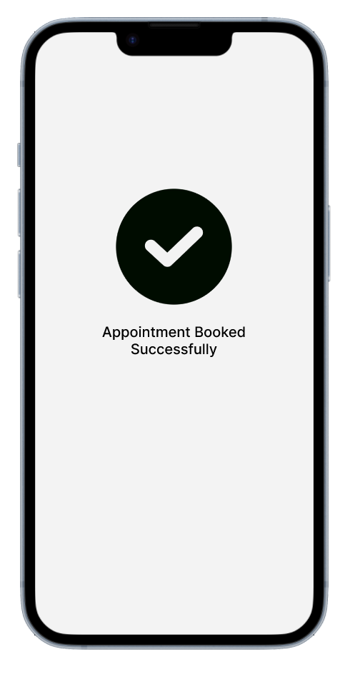
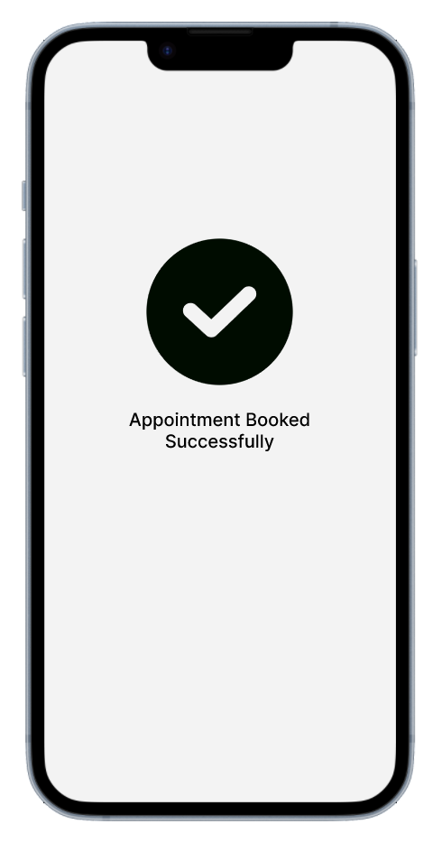

The world of medicine continues to grow, and more people are getting help when we once thought it impossible. Although the problem lies in accessing this new help. Some people may suffer from conditions that impede them from access to the hospital; whether it be no access to transportation or forgetfulness. This is where the myMed app comes in. It is an app that can manage their medication, doctor appointments, set reminders, track medication usage, and communicate with healthcare professionals.
To create such an app though, I must first understand my target audience with research, understand their motivations, design a draft, get feedback, and finally reflect to create a final product.
Before I begin creating an app, research will be necessary. It is crucial to understand one’s audience to convey a proper design language. In my case, where I am not too familiar with a medical app, I believe interviews would be the best approach. Since we get to exchange off another, the conversation may lead the interviewed to bring up information I would not have necessarily been able to extract through a simple survey.
Questions asked in the interview: What would you look for in a medicare app? Do colors matter in a professional app? Would you prefer a familiar/friendly aesthetic or a professional/medical one for this app? How would you want this app to track your medication? If the app had a calendar, would you use it, or the one you normally use?
I manage to gather all responses and find the commonality between them all to get a broad idea of what should be done, while keeping in mind the unique comments to consider as extra features of the app. In general, people are looking for an app to keep all the necessary information at an easily accessible place; they don’t want it to be difficult to find what they need to know. Most people found it unnecessary to have a calendar within the app since they all use either a physical or another digital one. Some found it useful that it could track all medical related stuff in one place. People would want professional colors but mention a familiar UI may help navigating the app easily. Although most people said they wouldn’t mind search for the medication they have and entering the amount, one person had a bright idea of scanning or uploading the prescription they receive. A plus for verbal interviews.
With all the information gathered, I can create a persona whom I will be considering when designing.
Once a persona is made, it is important to image how they may interact with my app.
This Journey map will help me understand where I should focus on.
| Stages of Journey | Motivation | Contact Professional | Book Appointment | |||
|---|---|---|---|---|---|---|
| Activities | Minor health concerns want to be resolved | Logs onto with face recognition and waits to speak with a professional | Chats with doctor and is informed the issue is minor, but can book an appointment if desired | Books an appointment in app | Checks medication usage to see whether they need to refill | Orders more medication from pharmacy and books the pick up the same day as the doctor meet-up |
| Experience | A little anxious to know what it could be | Happy to log on quick and get in queue with a professional | Happy with receiving useful information without having to leave the house. | Happy to not have to wait on the phone. Happy it saves to calendar automatically | Unhappy to see that they’ll need to pay again for medication. Grateful to remember and how easy it is to check | Happy that it is easy to do everything in one app |
| Customer Expectations | Quick and satisfying responses | Quick and easy design | Professional advice |
I also design a User Flowchart to ensure the way I visualize my app flows properly.

 

I did ask people questions on the aesthetics to help decide which design language i should lean towards. The answers I got suggest a professional feel with a familar look. To convey professionalism, I chose a strong colour pallette that feel medical. To seem familiar i went with a trendy rounded borders look. Simple and minimalistic to avoid cluttering. I chose a sans serif font to help with legibility.


 clickable prototype
clickable prototype
I would screen record the actions the user takes and sit next to them to observe how they run through the tasks. I would ask a few questions at the end, like if it was easy to complete or if there was anything they would change.
I would sit through all the feedback and understand where the main issues are. I would ensure the new iteration covers all the concerns mentioned.
Since I am not too familiar with medical apps, the UX design process help me start this project. It broke down the feat into small executable steps that strengthened my design as I went on. I managed to learn a lot through interviews and found it easier to make design choices because there was a persona’s preferences I would refer to. The biggest challenge I had was creating the sketch. I was a little stressed because I didn’t really know how to put my ideas on paper, but I tackled one page at a time and eventually completed the app.